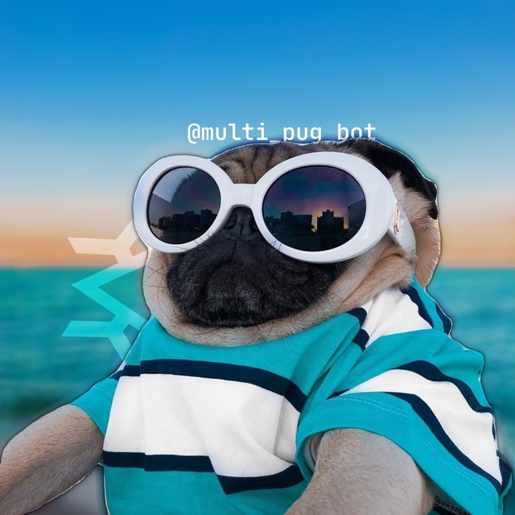

Дружелюбный Телеграм бот-модератор
Возможности бота
Модерация
Бот умеет выдавать различные наказания, такие как предупреждения, заглушения и блокировки пользователей. Так же бот может забрать у пользователя возможность отправлять медиа.
RolePlay Фишки
Спомощью rp комманд, вы можете например поцеловать или обнять кого то прямо в чате! Так же есть возможность добавлять кастомные никнеймы.
Мопс Помощник!
Gemini 2.5 Flash позволяет мопсу отвечать на вопросы пользователей быстро и качественно, можно выбирать стили общения.
Интерпретатор Python
Спомощью мопса, вы можете исполнить свою Python программу прямо в чате!
Фильтры
Боту можно указать на какие сообщения реагировать, к примеру можно сделать так, чтоб мопс отвечал на слово "Мяу" словом "Гав", так можно сделать абсолтно любой фильтр, даже с медиа!